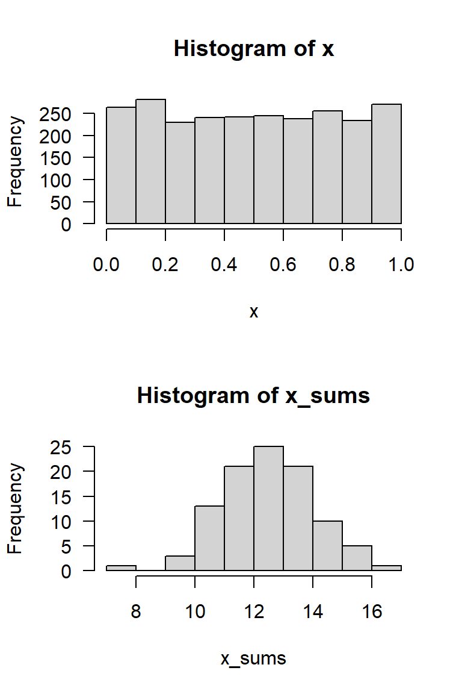
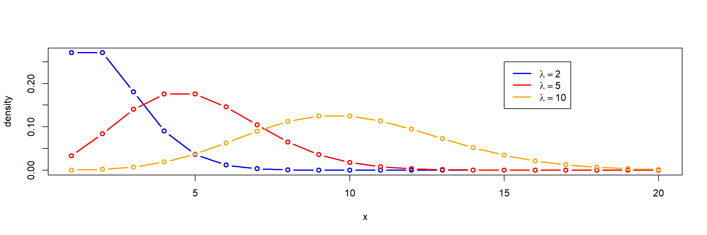

a specific shape (distribution type, a mathematical formula)
can be described by its parameters (e.g. mean \(\mu\) and standard deviation \(\sigma\)).
Probability distributions are one of the core concepts in statistics and many statistics courses start with coin tossing1 or dice rolls. We begin with a small classroom experiment.
What is your favorite number?
In a classroom experiment, students of an international course were asked for their favorite number from 1 to 9.
number
1
2
3
4
5
6
7
8
9
freqency
0
1
5
5
6
4
12
3
3
The resulting distribution is:
empirical: data from an experiment
discrete: only discrete numbers (1, 2, 3 …, 9) possible, no fractions
Computer simulations
Instead of real-world experiments, we can also use simulated random numbers.
advantage: we can simulate data from distributions with known properties
challenge: somewhat abstract
Purpose
get a feeling about randomness, how a sample following a given “theory” can look like
explore and test statistical methods and train understanding
a tool for experimental design
testing application and power of an analysis beforehand
\(\rightarrow\) Simulation: important tool for statistical method development and understanding!
Continuos uniform distribution \(\mathbf{U}(0, 1)\)
C.F. Gauss, Gauss curve and formula on a German DM banknote from 1991–2001 (Wikipedia, CC0)
The central limit theorem (CLT)
Sums of a large number \(n\) of independent and identically distributed random values are normally distributed, independently on the type of the original distribution.
A Simulation experiment
generate a matrix with 100 rows and 25 columns of uniformly distributed random numbers
compute the row sums
par(mfrow=c(2, 1), las=1)set.seed(42)x <-matrix(runif(25*100), ncol =25)# View(x) # uncomment this to show the matrixx_sums <-rowSums(x)hist(x)hist(x_sums)
\(\rightarrow\) row sums are approximately normal distributed

Random numbers and density function
Density and quantiles of the standard normal
in theory, 50% of the values are below and 50% above the mean value
95% are between \(\pm 2 \sigma\)
Density and quantiles of the standard normal
Cumulative distribution function – Quantile function
Quantile
1
1.64
1.96
2.0
2.33
2.57
3
\(\mu \pm z\cdot \sigma\)
one-sided
0.95
0.975
0.977
0.99
0.995
0.9986
\(1-\alpha\)
two-sided
0.68
0.90
0.95
0.955
0.98
0.99
0.997
\(1-\alpha/2\)
Standard normal, scaling and shifting
\(\mu\) is the shift parameter that moves the whole bell shaped curve along the \(x\) axis
\(\sigma\) is the scale parameter to stretch or compress in the direction of \(x\)
Standardization (\(z\)-transformation)
Any normal distribution can be shifted scaled to form a standard normal with \(\mu=0, \sigma=1\)
additional parameter “degrees of freedom” (df)
used for confidence intervals and statistical tests
converges to the normal distribution for \(df \rightarrow \infty\)
Dependency of the t-value on the number of df
df
1.00
4.00
9.00
19.00
29.00
99.00
999.00
t
12.71
2.78
2.26
2.09
2.05
1.98
1.96
Logarithmic normal distribution (lognormal)
many processes in nature do not follow a normal distribution
limited by zero on the left side
large extreme values on the right side
Examples: discharge of rivers, nutrient concentrations, algae biomass in a lakes
Parent distribution of the lognormal
log from values of a lognormal distribution \(\rightarrow\) normal parent distribution.
lognormal distribution is described by parameters of log-transformed data \(\bar{x}_L\) and \(s_L\)
the the antilog of \(\bar{x}_L\) is the geometric mean
Binomial distribution
number of successful trials out of \(n\) total trials with success probability \(p\).
How many “6” with probability \(1/6\) in 3 trials?
medicine, toxicology, comparison of percent numbers
similar, but without replacement: hypergeometric distribution in lottery
Poisson distribution

distribution of rare events, a discrete distribution
mean and variance are equal (\(\mu = \sigma^2\)), resulting parameter “lambda” (\(\lambda\))
Examples: bacteria counting on a grid, waiting queues, failure models
Quasi-poisson if \(\mu \neq \sigma^2\)
If \(s^2 > \bar{x}\): overdispersion
if \(s^2 < \bar{x}\): underdispersion
Confidence interval
– depends only on \(\lambda\) resp. the number of counted units (\(k\))
Typical error of cell counting: 95% confidence interval
counts
2
3
5
10
50
100
200
400
1000
lower
0
1
2
5
37
81
173
362
939
upper
7
9
12
18
66
122
230
441
1064
Confidence Intervals
Remember: The central limit theorem (CLT)
Sums of a large number \(n\) of independent and identically distributed random values are normally distributed, independently on the type of the original distribution.
we can use methods assuming normal normal distribution for non-normal data
if we have a large data set
if the original distribution is not “too skewed”
required number \(n\) depends on the skewness of the original distribution
Reason: Methods like t-test or ANOVA are based on mean values.
Confidence intervals of the mean
Standard error
\[
s_{\bar{x}} = \frac{s}{\sqrt{n}}
\]
variability of the mean is half, if we increase the sample size four times (\(2^2\))
interval in which the true mean is found with 95% probability
Difference between sample and confidence intervals
prediction interval: characterizes the distribution of the data from the parameters of the sample (e.g. mean, standard deviation). It estimates the range where a single, future observation will likely fall.
standard deviation \(s_x\) measures the variability of the original data
reconstruct the original distribution if its type is known (e.g. normal, lognormal)
confidence interval: characterizes the precision of a statistical parameter, based on its standard error
Using \(\bar{x}\) and \(s_\bar{x}\), estimate the interval where we find \(\mu\) with a certain probability
less dependent on the original distribution of the data due to the CLT
necessary for small samples: \(n\lessapprox 30\), \(n-1\) degrees of freedom
can also be used for \(n>30\)
\(t\)-quantile can be found in tables or calculated with the qt()function in R.
Example with \(\mu=50\) and \(\sigma=10\):
set.seed(123)n <-10x <-rnorm(n, 50, 10)m <-mean(x); s <-sd(x)se <- s/sqrt(n)# lower and upper confidence limitsm +qt(c(0.025, 0.975), n-1) * se
[1] 43.92330 57.56922
\(\rightarrow\) the true mean (\(\mu\)=50) is in the interval CI = (43.9, 57.6).
Outliers
extremely large or extremely small values are sometimes called “outliers”
but, potential outliers can be “extreme values” from a skewed distribution. Excluding them, can be scientific misconduct.
a “true” outlier is a value that is not from the population we want to analyze, e.g. a serious measurement error if someone forgot to add a chemical in an analysis.
it can also be something interesting, e.g. the result of new phenomenon
\(\Rightarrow\) It can be wrong to exclude values only because they are “too big” or “too small”.
\(\rightarrow\) Try to find the reason, why values are extreme!
\(4 \sigma\)-rule
check if a value is more that 4 standard deviations away from the mean value.
sample size should be \(n \ge 10\), \(\bar{x}\) and \(s\) are calculated without the potential outlier.
similar “rules of thumb” can be found in statistics textbooks.
Outlier test for linear models with Bonferroni correction
For linear models and GLMs we can use the Bonferroni outlier test from package car.
library(car)x <-c(rnorm(20), 12) # the 21st value (=12) is an outlieroutlierTest(lm(x~1)) # x ~ 1 is the null model
rstudent unadjusted p-value Bonferroni p
21 11.66351 4.1822e-10 8.7826e-09
\(\rightarrow\) The 21st value is identified as an outlier:
Alternative to outlier tests
use robust parameters and methods,
e.g. median or trimmed mean instead of the arithmetic mean,
robust linear regression rlm instead of lm
rank-based methods like Spearman correlation
Important outliers may be omitted in an analysis, but the the number and extent of outliers must be mentioned!
Extreme values in boxplots
extreme values outside the whiskers if more than 1.5 times distant from the box limits, compared to the width of the interquartile box.
sometimes called “outliers”.
I prefer the term “extreme value”, because they can be regular observations from a skewed or heavy tailed distribution.
Example
par(mfrow=c(1, 3), las=1)elbe <-read.csv("https://tpetzoldt.github.io/datasets/data/elbe.csv")discharge <- elbe$dischargeboxplot(discharge, main="Boxplot of discharge")hist(discharge)hist(log(discharge -70))
Discharge data of the Elbe River in Dresden in \(\mathrm m^3 s^{-1}\), data source: Bundesanstalt für Gewässerkunde (BFG), see terms and conditions.
left: large number of extreme values, are these outliers?
middle: distribution is right-skewed
right: transformation (3-parametric lognormal) \(\rightarrow\) symmetric distribution, no outliers!